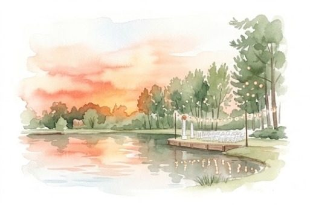
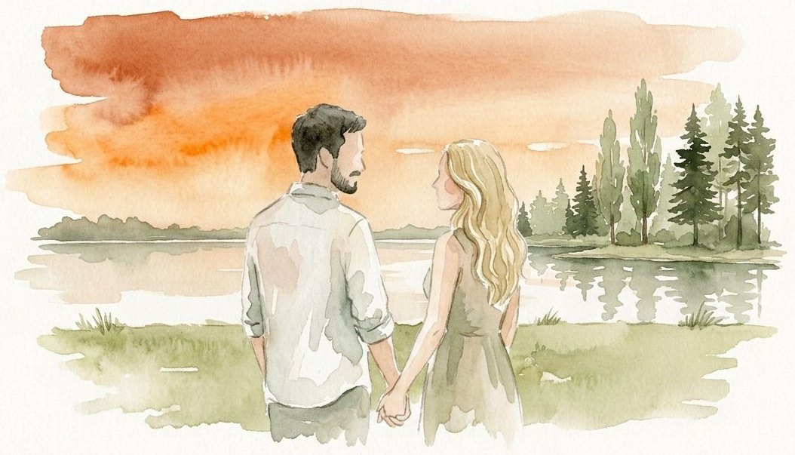
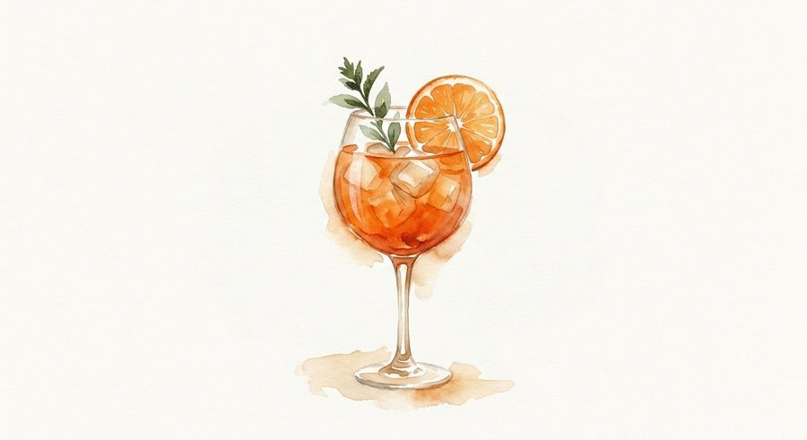

Sábado 3 de abril · 2027
Finca La Josefina
Seguí bajando
El laguito, a la hora de la ceremonia
Todo en el mismo lugar
La ceremonia civil es en el parque, al lado del laguito. Cuando se esconda el sol cruzamos unos metros y ahí nos quedamos hasta que no quede nadie de pie.
La ceremonia
18:00
En el parque, junto al laguito
La fiesta
20:00
A unos metros, hasta la madrugada

Nos gustaría mucho que estés ahí.

Cuando cae el sol
Y a partir de ahí es todo luz cálida, naranjas sobre la mesa y copas que no se vacían.